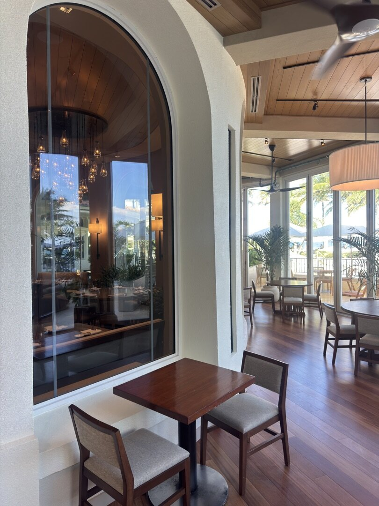

Nashville's Standard for
Laminated Glass & High-Performance IGUs.
ACG furnishes glazing materials and consults on Middle Tennessee commercial envelopes. No Tennessee office. No Tennessee field labor.
Who is a commercial glazing supplier and consultant serving Middle Tennessee?
Nashville commercial glazing is delivered by American Commercial Glass, furnishing materials and consulting for Middle Tennessee projects to serve Middle Tennessee general contractors. ACG supplies storefront, curtain wall, impact, and fire-rated glazing systems, backed by Florida license CGC #1531993, delivering commercial glazing since 2021. ACG holds no Tennessee office and performs no Tennessee field labor.
Material supply and consulting for Middle Tennessee. No field labor.
ACG is a Florida commercial glazing contractor. In Middle Tennessee the work is material supply and project consulting: storefront, curtain wall, laminated IGU, and fire-rated assemblies specified against Tennessee code and IECC Climate Zone 4A.
Tennessee supply and consulting uses the same standards as our Florida operations - Florida CGC qualification, manufacturer-specified system selection, and the same submittal and quality processes proven across our Florida work. ACG holds no Tennessee office and performs no Tennessee field labor; field installation is coordinated with in-state install partners when needed.
Why laminated IGU is the single-spec answer.
Most commercial envelope specifications pick one performance category and compromise the rest. Laminated IGU stacks all four - acoustic, thermal, UV, and security - into a single assembly.
| Metric | Monolithic Glass | Standard IGU | ACG Laminated IGU |
|---|---|---|---|
| STC (acoustic) | 31 | 35 | 39-50 with acoustic PVB |
| R-Value (insulation) | ~1 | 2-4 | 4-5+ |
| Energy savings vs single pane | baseline | 20-30% | 20-30% plus solar + UV control |
| UV blockage | ~25% | ~25% | ~99% |
| Break behavior | Shatters | Shatters | Holds intact; deters entry |
| Low-E plus argon | Limited | Yes | Yes; U-value improved up to 16% |
Quiet. Protected. Secure. Efficient.
Quiet
Up to 50% noise reduction versus single pane. STC 45+ achievable with acoustic PVB interlayer. Downtown, airport, highway, and hospitality-sensitive sites all benefit.
Protected
99% UV blockage at the laminated interlayer. Guards art, millwork, fabric, finishes, and hardwood from fade damage. Extends interior material life 3-5× versus annealed glass.
Secure
Laminated interlayer holds glass together under impact or attack, defeating smash-and-grab forced entry. Retail, banking, education, and healthcare facilities specify it as baseline security.
Efficient
Low-E laminated IGUs with argon fill cut envelope energy loss up to 30%. U-value improves up to 16% versus standard clear IGU. Assemblies meet IECC 2021 commercial fenestration requirements and ASHRAE 90.1 prescriptive thermal performance for IECC Climate Zone 4A (Nashville). HVAC demand drops 15-25% on most retrofit applications.
Monolithic vs IGU vs Laminated IGU.
Monolithic glass is the floor. A single pane of annealed, heat-strengthened, or tempered glass delivers essentially no insulation (R-value around 1), blocks only the natural UV rejection of glass itself (roughly 25%), and provides STC 31 acoustic performance - which means a typical conversation at 2 meters is still clearly audible through the wall. Break behavior is a shatter. On a modern commercial envelope, monolithic glass is appropriate only for interior partitions, spandrel back-up, or single-pane-permitted residential applications. It is not a commercial exterior spec.
A standard IGU solves thermal, and nothing else. Two glass lites with a sealed air or argon cavity raise R-value to 2-4 and cut single-pane HVAC demand by 20-30%. But a basic IGU does not change UV blockage (still around 25%), only modestly improves STC (to about 35), and both lites still shatter under impact. On a specification focused purely on energy code compliance, a standard IGU is adequate. On a specification that has to balance thermal, acoustic, UV, and security simultaneously - which describes essentially every Class-A office, hotel, healthcare, or high-end multifamily project in Nashville - a standard IGU leaves three performance categories unresolved.
Laminated IGU is the single spec that solves all four. By replacing one (or both) of the IGU lites with laminated glass (two glass plies bonded by a PVB or SGP polymer interlayer), the assembly inherits: UV blockage up to 99%, acoustic performance up to STC 45-50 with acoustic PVB, forced-entry resistance measured in minutes rather than seconds, and safety-glazing compliance per ANSI Z97.1 and CPSC 16 CFR 1201. The thermal benefit of the IGU is preserved - often improved, because the laminated construction adds mass that supports lower U-value with the same low-E coating.
For Nashville's mixed-humid climate, the balance of U-value (how well the envelope blocks heat loss in winter) and SHGC (how much solar heat gain passes through in summer) matters. Laminated low-E IGUs with argon fill typically target U-value 0.28-0.32 and SHGC 0.25-0.40 depending on orientation and exposure. South and west orientations take lower SHGC to control solar load; north orientations can run higher SHGC to retain useful winter solar gain. The laminated interlayer doesn't change the coating selection - it stacks acoustic, UV, and security performance on top of whatever low-E decision serves the building's thermal target.
Where laminated IGU is the specification.



Validated across every authority having jurisdiction we work under.
Tennessee Title 68 Chapter 120
State-level safety glazing statute. ACG specifies tempered or laminated at every hazardous location required by statute.
IBC Chapter 24
International Building Code hazardous-location requirements. Laminated IGU satisfies the safety-glazing mandate and adds acoustic, thermal, and UV layers.
ANSI Z97.1 / CPSC 16 CFR 1201
Safety-glazing performance standards. Every laminated and tempered assembly ACG furnishes carries current certification documentation.
Nashville Metro Codes & Fire Marshal
Metro Codes plan review fluency and State Fire Marshal coordination on fire-rated glazing. Submittal packages are built to the AHJ's review standard.
AAMA / FGIA Standards
AAMA CW-DG-1 curtainwall design, AAMA 501.2 field water test, AAMA Gold Label product certification. National standards that govern commercial fenestration performance.
Severe-Weather Envelope Performance
Our Florida structural-glazing engineering discipline transfers directly to Tennessee commercial specifications. Laminated glass assemblies are our specialty for Tennessee Class-A office, healthcare, hospitality, education, and retail - the same engineering rigor, optimized for Tennessee code and climate.
Nearby commercial construction markets.
These pages describe commercial glazing conditions in nearby cities. ACG furnishes materials and consults from Florida offices. ACG holds no office and performs no field labor in those cities.
Memphis, TN
Shelby County
Knoxville, TN
Knox County
Chattanooga, TN
Hamilton County
Louisville, KY
Jefferson County
Lexington, KY
Fayette County
Birmingham, AL
Jefferson County
Huntsville, AL
Madison County
Atlanta, GA
Fulton County
Asheville, NC
Buncombe County
Cincinnati, OH
Hamilton County
Specified systems. Florida process. Tennessee supply.
Tennessee supply and consulting furnishes the same manufacturer lineup as our Florida operations: ESWindows (laminated impact storefront and curtainwall - ES-50, ES-7000, ES-8000), Euro-Wall (multi-slide, bi-fold Vistafold, pivot, DirectSet), PGT (laminated impact-resistant fenestration), Allegion (commercial hardware, LCN automatic operators), TGP (fire-rated laminated glazing - UL 9, UL 10B, UL 263), and Slimpact (steel framing).
Tennessee commercial envelopes still need laminated IGUs with structural, acoustic, thermal, and security performance documented in the submittal. ACG consults on that selection from Florida offices. ACG holds no Tennessee office and performs no Tennessee field labor.
Send your project.
For general contractors, architects, owners, and developers with commercial glazing scope on a Tennessee, Kentucky, Alabama, Georgia, North Carolina, or Ohio project breaking ground in late 2026 or 2027.